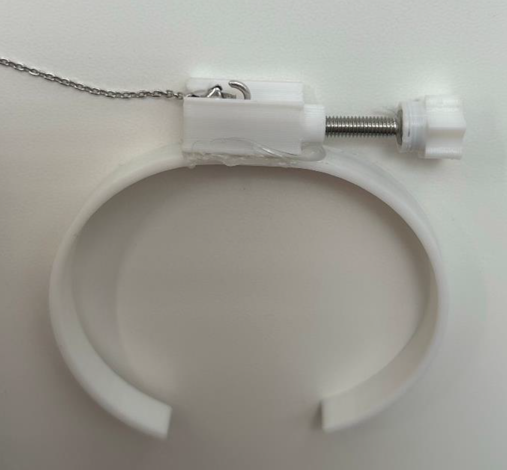
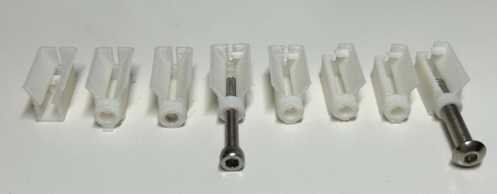
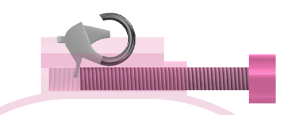

Bracelet Aid
A screw mechanism and flexible cuff that let people with limited dexterity put a bracelet on alone.

Project Overview
Bracelet Aid was inspired by the common struggle of putting on bracelets alone, particularly for individuals with limited finger mobility, dexterity problems, or long nails. Many people require assistance to wear jewelry, and some lose the ability entirely as their mobility decreases over time. This project aims to provide independence and ease for those who struggle with this everyday task, creating a solution that restores the ability to wear bracelets without assistance.
Demo Video
Design & Development
The design process involved multiple iterations to create an effective solution. Initial research measured existing bracelet clasps to determine optimal slot dimensions and tapered angles. Early prototypes revealed a critical rotation issue that prevented proper clasp opening. This was solved by adding a small slot for bracelet chain threading and a security ledge to prevent unwanted rotation. The final design was optimized for injection molding manufacturing and included user research to determine optimal cuff dimensions using thin PLA material for comfort and wide user compatibility.

Results & Testing
Comprehensive user testing was conducted to evaluate the effectiveness of the Bracelet Aid. Four users were given instructions on product usage and then timed while putting on bracelets both with and without the aid. The results demonstrated consistent time improvements ranging from 9 to 62 seconds when using the aid, with all users successfully completing the task after proper instruction.
However, testing revealed a significant usability challenge: 0% of users could intuitively figure out how to use the product without explanation, indicating the need for clear instructional materials. User feedback highlighted that while the design wasn't initially intuitive, it became easy and comfortable to use once understood. Based on this feedback, design iterations were made to improve the screw handle size for better comfort and usability.

Project Team
- Salih Al-Tak
- Valerie Stephens
- Noor Abdullah